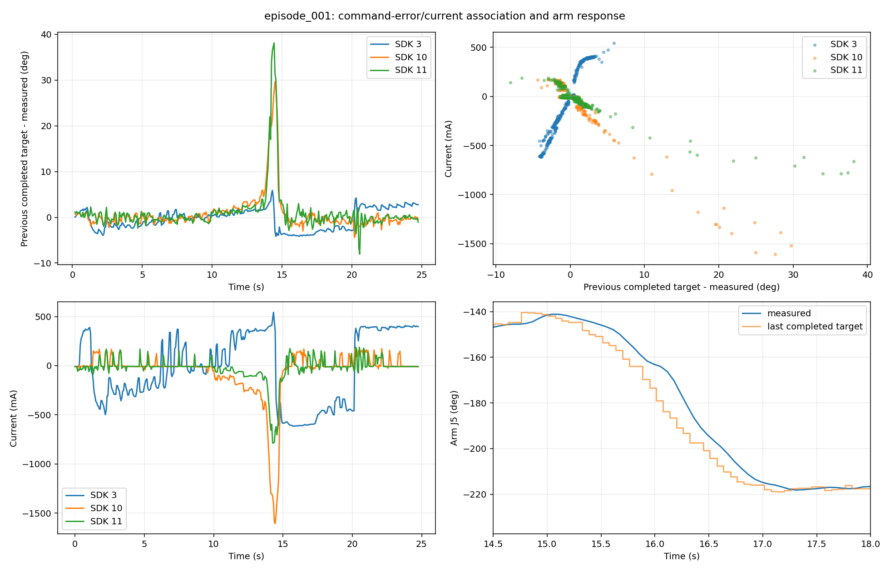
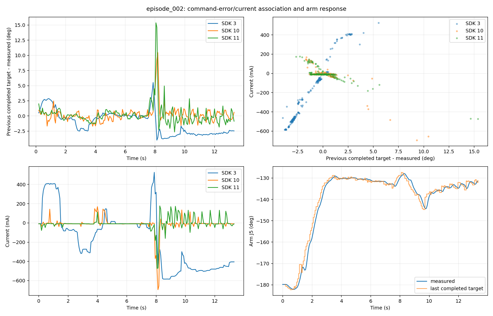
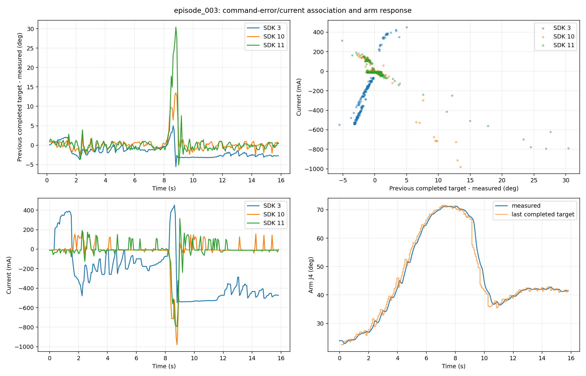

主要问题涉及执行节奏、闭合接触和失败后的行为，成因的确定程度不同。
对象为 session_20261011_220535 的三段记录。本文在完整数据排查基础上，追踪配置、当前调用链、时序、视频、命令与反馈，并增加名义手部几何检查。结论分为“可直接确认的机制”和“已有证据支持、仍需验证的物理原因”。全部检查均为离线只读；Raw 未改变。
先纠正上一轮的一处单位判断。反馈 finger_state.torque 的单位确实是 mA；但厂商手册把位置模式的 effort_limit 定义为 0–400 的输出比例，400 对应 100%。Python SDK 文档也列出 tor_max 的 0–400 范围，ROS2 文档仅在 mode 5 力控条目中把 tor_max 标为 mA。此次代码使用 mode 3，并将名为 tor_max_ma 的值不经换算地写入 tor_max。所以不能把 300/360 直接解释为 300/360 mA，也不能宣称电流超过配置 5.35 倍。
本机厂商原件：使用手册第 23 页、Python SDK 文档、ROS2 文档的控制模式表。这纠正了比较口径，但尚未建立文档版本与采集固件的完整对应。
1．每执行 8 步出现一次 125 ms 发令间隔：直接原因是 sync 调度。
配置周期为 62.5 ms。_execute_slot() 在动作块最后一步清空 plan；下一拍 step() 才提交新推理并记录一条未下发观测；结果完成后在下一拍交接。记录恰好表现为 row 2–9 下发、row 10 等待、row 11–18 下发、row 19 等待。完成的 96 个 query 都采用 bootstrap 交接。
因此稳定节奏是“8 次下发 + 1 拍等待”，平均发令率约 14.2 Hz，模型重新取观测的间隔约 0.5625 s。推理仅耗时 26.3–37.9 ms，观测无丢 slot，现有证据不支持 GPU 超时或摄像头卡顿造成这些固定空档。空档是没有新端点命令；控制器仍可朝上次目标运动，不能直接等同于机械臂静止 125 ms。
同一动作块最后一步所用最新输入源已过去约 516–549 ms。当前 1 s freshness 检查允许这种情况，但抓取接触在块内发生变化时，后续若干动作仍由接触前的预测决定。
源码：runner.py:508–515、733–734、841–847。这是数据时序直接支持的实现机制；是否以及多大程度导致某次失败，需要改变调度后的对照实验。
2．动作块边界的目标修正偏大：重新生成的整块轨迹缺乏跨块连续性约束。
sync 每次用新的两帧观测重新预测。ManiFlow 解码器每次调用 torch.randn_like() 生成新的采样起点；episode 固定 seed 并不意味着每次 query 使用相同噪声。此模式没有传入上一块动作前缀，没有执行重叠段的一致性约束。现实执行又已偏离上一块预测，下一块自然可能改走另一条轨迹。
| Episode | 臂目标最大相邻跳变 | 手目标最大相邻跳变 |
|---|---|---|
| 001 | 6.53°，15.313 s | 23.90°，14.188 s |
| 002 | 5.72°，9.689 s | 18.36°，8.000 s |
| 003 | 8.87°，9.126 s | 16.63°，8.562 s |
六个最大值都位于块边界。这里的下发间隔也从约 62.5 ms 增大到约 125 ms，因此不能把这些角度直接除以 62.5 ms 判超速。按真实时间归一后，臂边界修正速度中位数仍为 21.8–24.3°/s，高于块内 13.3–16.5°/s，说明除了多等一拍，也存在额外重规划修正。
可以确认“独立重新采样且未约束跨块连续性”这一机制；目前不能把每次跳变具体分解成随机噪声、反馈改变和视觉条件变化各自贡献。此次为 joint 模式，目标不经过在线 IK；没有发现 2π 绕回式巨跳的证据。当前 RTC 实现仅支持 DDIM Diffusion，并不支持此 ManiFlow 解码器，不能把切换 rtc 当成现成修复。
源码：policy runtime.py:161–195、237–248；consistency_flow.py:281–290。实际跨仓库路径在 causal_metrics.json 留有 SHA-256。
3．机械臂目标与实测存在明显差距：主要表现为动态跟随滞后，不能用 ACCEPTED 判断到位。
第一段 16.125 s 的 J5，相对此前已完成 SDK 调用的最近端点差 17.44°。本次重新对齐了 submit_completed_ns 与 arm_ns；“同一行新目标减测量”会包含未来才下发的命令，不能直接解释为执行误差。
在第一段 15–17.5 s 的快速转移区间，将 J5 目标时间曲线平移约 240 ms 后，与实测的 RMSE 从 9.14° 降至 1.27°；目标稳定后实测逐渐追上。240 ms 是这个区间的轨迹相位拟合值，不是通信延迟或精确辨识出的固件时延。
当前驱动使用 Mode 6 的 set_servo_angle(wait=False)，速度上限 135°/s、加速度上限 810°/s²。厂商说明此模式在收到新目标时中断原规划，并从当前位置重新规划执行。因此每个端点没有“必须在 62.5 ms 内到达”的保证。连续移动目标、跨块修正和控制器内部轨迹规划共同构成合理解释；现有日志不足以分离控制器规划、负载和底层伺服各自贡献。UFactory 官方 Mode 6 说明。
源码：xarm7.py:229–255；图：J5 目标和实测时序。所见 SDK 调用约 10–14 ms，不能解释全部 240 ms 相位差；也没有证据据此断言电机故障。
4．闭合时小指大电流、未到位：证据支持位置控制器持续追赶受阻或来不及到达的目标。
三段 SDK 10 小指第一关节峰值分别为 −1606、−694、−979 mA。相近时刻，SDK 11 小指第二关节相对先前已下发目标的最大偏差分别为 38.13°、15.37°、30.39°，并伴随闭合接触。SDK 10 电流与自身位置误差的相关系数分别为 −0.978、−0.886、−0.955；不同电机电流方向不同，负值本身不表示异常。
代码为位置模式，kp 大多 100，SDK 3 为 120，ki=kd=0。大幅闭合目标 + 实际闭合受接触或动态响应限制 → 位置偏差增大 → 驱动持续输出电流，与记录一致。桌面、物体或手内接触分别贡献多少，现有视角不能完全分开。触觉存在说明确有接触信号，但不能把所有电流都归于挤压玩具；第一段成功抓起时电流反而最大。
第一段 14.125–14.626 s，SDK 10 连续 9 个采样点绝对电流大于 1200 mA。厂商手册给出 ±1200 mA 保护参考值及超过设定阈值 500 ms 的告警描述，故仍值得专门核实；采样之间是否始终超阈、实际固件阈值和当时使能状态无法由这些记录确定。
当前 SEND_ACCEPTED_CODES 包含非零 SDK 返回值 1501035，关节板错误只输出 warning，没有写入这份 Raw。日志中的 dispatch=(1,1) 和 session errors=[] 不足以证明所有板卡无告警，也不足以证明保护失效。
源码：xhand.py:56–64、621–631、653–670；robot.py:194–212。相关系数是带时间自相关的数据描述，不是独立因果检验，也不代表已知固件控制公式。
5．空手后仍有食指电流和触觉：第 2、3 段优先怀疑手指互顶；第 1 段还存在其他稳态负载。
SDK 3 是食指侧摆轴，虽然 URDF 名为 index_bend。第二段 9 s 后、第三段 10 s 后，电流中位数分别为 −480、−472.5 mA，位置偏差中位数分别为 −2.96°、−2.73°；食指仍有触觉。三段 SDK 3 的电流与位置偏差相关系数均约 0.97–0.98，符合持续追赶未到位目标。
补充检查未应用 SRDF 的手自碰撞排除规则，而是单独检查 URDF 拇指与食指网格。结果如下：
| 视频已空手/释放后的区间 | 测量姿态网格重叠 | 下发目标网格重叠 | 拇指/食指最小网格间距中位数 |
|---|---|---|---|
| 001：21 s 后 | 0 / 61 行 | 0 / 55 次 | 43.61 mm |
| 002：9 s 后 | 14 / 70 行 | 62 / 62 次 | 0.288 mm |
| 003：10 s 后 | 73 / 94 行 | 83 / 83 次 | 0 mm；不代表穿透深度 |
第二、三段主要涉及拇指指尖与食指远端连杆。结合空手视频、非零触觉、持续目标误差，这比“传感器数值卡住”更支持手指闭合后互相顶住的解释。当前碰撞检查明确禁用手内部自碰撞，对应 pair 也在 SRDF 排除，因此动作准入不会因为这种接触拒绝命令。
边界是：名义网格没有准确表达软垫变形、零位误差及实际装配，不能把它当成真实接触证明，也不能要求所有闭合目标都不得有名义重叠。第一段张手后网格间距很大、各指触觉回零，但 SDK 3 仍有 +393 mA 和约 +2.45° 稳态偏差，因此自接触不能解释所有持续电流；机构摩擦、姿态负载、零位/传动及固件响应需要另行区分，不能直接认定是零位坏了或调大 kp。
源码：collision.py:1–5；SRDF:308；离线补充脚本。这项检查没有执行真实手部动作。
6．第 2、3 段抓取失败且继续搬运：初次抓取问题与没有恢复应分开解释。
第二段 6.5–7 s 玩具先在桌面上被推转，约 8 s 才空合手，电流峰值在 8.125 s。时间顺序更支持接近位置/方向、包络和闭合时机不匹配导致玩具脱离抓取区域；后来的电流峰值不能作为玩具最初被推离的原因。
第三段约 8.4–9.5 s 闭合、接触并抬起，到 9.75 s 已明显空手；不能凭这个视角精确区分从未夹稳与短暂持物后滑脱。同期小指大位置偏差、块边界修正和随后的拇指/食指自接触，支持没有建立稳定持物形态的解释；不能定量分配模型抓取姿态、执行滞后和物体摩擦的贡献。
失败后的持续搬运具有明确的系统条件：模型仅使用 joint_state 和 point_cloud，没有接收电流/触觉；执行层没有“确认已持物再抬起”的任务条件，也没有抓空后的恢复分支。每块仍执行 8 个预测动作。即使后续 query 已看到新点云，策略也可能继续输出训练中闭手后的搬运阶段。前半秒的延迟可由块内执行解释，但几秒钟空手搬运不能仅归因于一块观测较旧。
“训练集中缺少失败恢复样本”“四步推理不足”“相机外参偏差”目前都只是候选，没有对应训练分布检查、反事实推理或当时标定真值，不能当作已证实根因。数据完整、点云可重建也不等于视觉感知和标定一定准确。
视频证据：第二段抓取窗口、第三段抓取窗口；运行配置为 joint_state + point_cloud。此次仅三段，不能据此估计模型总体成功率。
7．100 行 action 为 NaN、三段公共导出被拒绝：来自等待语义与导出准入要求，不是文件损坏。
等待拍没有调用 SDK，writer 如实写入 dispatch=(0,0) 和 NaN target；已下发的 765 行 action 均有限。公共导出要求每行具备有效 dispatch，全部 13 字段完整且浮点有限，因此三段在 row 0 都会被拒绝。这里存在“包含启动/推理等待的 rollout Raw”与“每行均有动作的训练数据”之间的表示差异。
这些 NaN 没有进入本次策略的 joint_state / point_cloud 输入，不是抓取失败原因。若未来要用这批 rollout 训练，需要明确设计派生数据的动作与时间含义；不能通过伪造等待拍动作或删掉这些行回写 Raw。第三段最后一个 query 在人为终止时仍为 submitted 也是正常边界证据。



后续应分别检验调度空档/跨块连续性、空手自接触/张手稳态偏差、抓取失败后的策略行为。仅靠改一个限流数值、缩短推理或加入平滑不能证明解决了全部问题；本次没有实施这些控制改动。
复现：先运行 analyze.py，再运行 causal_analysis.py，解释器为 /home/zhanghaoyang/miniconda3/envs/real_robot/bin/python。基础指标及 Raw 哈希；补充指标、代码及文档哈希。代码解释基于当前存在未提交修改的工作区；时序模式得到本次 Raw 支持，但记录的 git HEAD 不足以复原采集源码全貌。未改写 Raw、生产代码或标定；未连接设备、执行回放或进行真机验证。